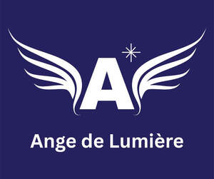

Trade Mark Journal No.2025/043 24 October 2025
UK00004279679 17 October 2025 (16,41,44)

- Class 16
- Printed and published matter in the fields of art, creative writing, psychotherapy, meditation, reiki, spirituality, hypnotherapy, healing, energy medicine, self help and complementary therapies and remedies, teaching, mentoring, coaching, and training aids, instructional and teaching materials, all relating to the aforementioned fields and therapies including art and creativity; any printed material relating to artistic work whether visual, musical or of literary nature.
- Class 41
- Educational and training services; entertainment services, sporting and cultural activities; information relating to education, entertainment, sporting and cultural events provided online from a computer database or the internet or provided by other means; organising of games and competitions; providing online electronic publications; publication of electronic books and journals online; publication of texts in electronic format or otherwise; arranging and conducting workshops, shows, conferences, seminars, fairs, symposia, tutorials, workshops and other events; interactive and distance learning courses and sessions provided online via telecommunications link or computer network or provided by other means; club services; electronic library services for the supply of electronic information (including archive information) in the form of electronic text, audio and/or video information and data; Provision of information and advice relating to al of the aforesaid.
- Class 44
- Psychological therapy namely in the form of art, writing, creative writing, journaling, psychotherapy, talking therapy, psychic reading, angel reading, talking therapy with deep listening skills and reflecting skills, counselling, meditation, guided meditation, spirituality, hypnotherapy, healing, energy medicine, and self help. .
Maison de Lumiere Ltd